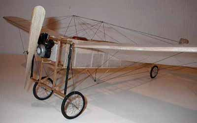
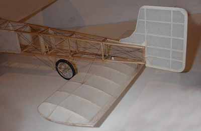

| This Bleriot model has a 26" span and was built from a modified R/N gas powered kit. The stabilizer incedence is adjustable as on the real one. The model has all flying wires, rudder cables and such. Turbuckles were made with a glob of glue painted silver. Sterling is still working on flying it, and trying to get the right rubber/prop combo. The model is very stable, and will land on grass. |

Copyright 2001, Thayer Syme. All rights reserved